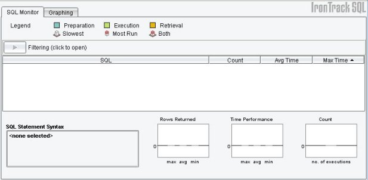
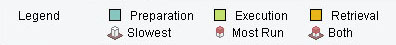

Introducing IronTrack SQL
In typical application development, the greatest sources of performance deficiencies are the network connection and database access. Applications with numerous calls often suffer major performance bottlenecks due to excessive or slow running SQL. Depending on the type of application developed, other factors, such as disk I/O, may also impact overall system performance. Sending requests over the wire (network I/O) and retrieving data from persistent storage (reading and writing to the database) are often the culprits for poor performance.
With the inability to view the actual execution of SQL transactions, such bottlenecks are often difficult to diagnose. These performance problems are most often detected in the testing environment, or even later, in the production environment, creating costly debugging efforts and changes to the source code.
Using IronTrack SQL, you can diagnose and correct common database performance issues. By gaining access to the data you need to analyze, you can optimize application performance and improve the efficiency of your SQL statements. IronTrack SQL provides a way for you to improve the performance of your applications in the following ways:
- By pinpointing unnecessary database calls and other potential bottlenecks.
- By comparing and analyzing performance over time from release to release or build to build.
- By automatically testing performance in regularly scheduled builds using Ant integration.
From this document, you can access the following information:
Analyzing and Optimizing Performance
Most application servers allow you to tune your system configuration to minimize database access for better runtime performance. However tuning requires visibility into the root of the problem. IronTrack SQL provides that visibility.
Without changing code or using complex profiling techniques, IronTrack SQL provides instant visibility to your SQL traffic using an intuitive user interface. You can examine all the SQL calls in a JDBC connection and quickly identify database access bottlenecks. IronTrack SQL provides all the data you need to measure and enhance the performance of your application.
Minimizing Unnecessary Database Calls
Generating numerous database calls, each transmitted to a remotely located database, could severely impact performance. For example, if you read two properties from one hundred EJBs, such as first name and last name, you are making a database call every time and are potentially generating two hundred separate calls, each of which could be transmitted to a remotely located database.
Every call to the database incurs a cost. To avoid running the exact same query tens or hundreds of times within a few seconds, you can use IronTrack SQL to identify and cache data that is not going to change in memory. You can easily sort by SQL statement or by the number of executions and quickly find good candidates for application-level caching, or simply unnecessary inquiries to the database.
While a caching infrastructure to save connections to the database is important, when you must connect to the database, you can use IronTrack SQL to identify queries that are run more times than necessary.
You can also use IronTrack SQL to locate and question suspicious queries. For example:
- Why are you running queries that only return an ID?
- Do you also have other queries that are keyed off an ID?
- For queries that return too much data and that have excessively long retrieval times, are you returning more than you need?
Although it may be tempting to store code in the database because it provides a single point of contact and each application benefits from the centralized functionality, it is often inefficient. IronTrack SQL cannot determine what occurs internally in a stored procedure, but it can demonstrate that a callable statement is taking a long time to execute, and you can then look for problems within the procedure. IronTrack SQL can also identify when you are using too many different SQL queries where one would suffice, which reduces your total number of queries and leverages the database SQL.
The IronTrack SQL Approach
Sometimes a practice works in one situation and does not in another. Your database configuration; its size; whether it is embedded, local, or remote; and the types of queries you are running all can change how you approach tuning. IronTrack SQL lets you perform empirical measures. You can make changes to your code, re-run it, and see the impact of your changes. Each snapshot can be analyzed side by side.
IronTrack SQL works with any application using JBDC, any database, and requires no code changes. IronTrack SQL integrates with existing build processes to provide continuous performance by analyzing the SQL generated by unit tests and looking for newly introduced code early in development cycle that may be causing performance problems.
IronTrack SQL can track all the SQL that flows between an application and a database through a GUI console, log files, or both.
IronTrack SQL Benefits
IronTrack SQL provides the following features:
- A fully interactive user interface with reports and graphs.
- A way to visually identify long running SQL statements by preparation, execution, and retrieval time.
- A way to visually identify excessively executed queries.
- A detailed analysis of any SQL statement, comparing it with the system average.
- A solution that works with any application using JDBC, any database, and requires no code changes.
- Timeline analysis — queries are arranged as they occur in time, providing a way for you to analyze interaction between queries, periods of high utilization, and so on.
- A way to compare two snapshots of performance data side by side.
- Expanded Ant task functionality that provides a way for you to assert on variances from baseline performance.
IronTrack SQL includes technology that enables visibility into the SQL transactions flowing between an application and the database. With its own Virtual JDBC Driver, it implements all of the methods and classes of a standard JDBC native driver, but does not require specific knowledge of the actual database. IronTrack SQL can intercept all API calls from any Java application that use the JDBC API to access a database without having to rewrite the application or the database.
Installing IronTrack SQL
This document describes how to install both the server and client components of IronTrack SQL. If the application server you will be using resides on the same system as the one on which you will run the IronTrack SQL client, you can install both components on that system. You can also install the client and server components on separate systems.
IronTrack SQL offers many advanced configuration options. For more information, see Advanced Configuration of IronTrack SQL.
From this document, you can access the following information:
The Installation Process
The IronTrack SQL installation process begins after you have downloaded the irontracksql-installer.jar file to the Desktop. From there, the installation process consists of the following steps:
- Run the irontracksql-installer.jar file to start the installer for IronTrack SQL and extract the files you will need for installing and configuring the system.
- Copy the server configuration files to your application server. (See the installation process for your application server to determine where to copy these files.)
- Set the classpath on your application server to recognize the configuration files.
- Wrap your application server's database driver by editing the application server's database driver file to use the IronTrack SQL database driver and the IronTrack SQL server configuration to use the application server's driver.
- Make sure that the port number defined in the IronTrack SQL server configuration matches that of the client.
After you have completed the installation process for your specific application server, you can begin using IronTrack SQL to monitor and manage the performance of your application's SQL statements.
Initiating IronTrack SQL Installation
To begin installing IronTrack SQL
- From the Desktop, double-click the irontracksql-installer.jar file.
— OR —
From a command prompt, enter java -jar irontracksql-installer.jar from a command line to display the IronGrid Java installer.
- Use the down arrow to select the language to use, and click OK to display the welcome page.
- Click Next to display the IronGrid software license agreement.
- After reading the license agreement, select the radio button to accept the terms and click Next to display the installation path for IronTrack SQL.
- Enter an installation path.
— OR —
Click the Browse button to select an installation path.
Note: If it does not already exist on your system, the installer will create the new path.
- Click Next to display the Installation progress screen.
- When the installation process is complete, click Next to display a list of program groups in which you can add a shortcut to the IronTrack SQL client.
- In the Select a Program Group for the Shortcuts section, click on a program group in which to include a shortcut.
- For Windows: You optionally can select or deselect the Create shortcut on the desktop check box.
- Click Create Shortcuts.
- Click the Quit button to exit the installer.
Starting the IronTrack SQL Client
To continue installing the IronTrack SQL server component, you will need to run the client component.
To start the client component, from the Desktop, double-click on the IronTrack SQL shortcut to display the IronTrack SQL user interface, or run java -jar irontracksql.jar from the command line.

Pre-Installation for the IronTrack SQL Server Component
The server component of IronTrack SQL includes specific installation instructions for each of the supported application servers. Before installing the server component, ensure that your environment meets the requirements defined in the following sections.
Supported Platform Operating Systems
IronTrack SQL is supported on most Windows, UNIX, and Linux operating systems. IronTrack SQL is supported on any Java supported platform running a minimum of JDK 1.3, with JDK 1.4 recommended.
Note: You must have Java installed prior to installing IronTrack SQL.
Supported Application Servers
IronTrack SQL supports the following application servers:
Note: Your installation may differ from the following examples, depending on how your application server environment is configured.
IronTrack SQL also supports unspecified application servers and applications that do not run on application servers. For more information, see Installing IronTrack SQL on an Unspecified Application Server.
System Requirements
IronTrack SQL requires the following minimum disk space and memory:
- Disk Space — 5MB
- Memory — 120MB
Note: Logging is enabled by default, and the IronTrack SQL log file, spy.log, can get very large. To accommodate the growth of spy.log, it is recommended that you reserve significant disk space beyond these minimum requirements. For information on disabling logging, see Advanced Configuration of IronTrack SQL.
Directory Structure
Following is the directory structure of IronTrack SQL:
IronTrack SQL
docs
ico
license
lib
Uninstaller
irongrid.properties
irontracksql.jar
log4j-1.2.8.jar
p6spy.jar
spy.properties
The /docs directory contains releaseNotesIronTrackSQL.html and the HTML help files for IronTrack SQL. You can open index.html to view all of the files in the IronTrack SQL help system.
The /ico directory contains the following files:
irongrid.ico
uninstall.ico
The /lib directory contains the following files:
alloy.jar
commons-pool.jar
jakarta-regexp-<version>.jar
janino.jar
jce-jdk<version>.jar
jcommon<version>.jar
jdom.jar
jfreechart<version>.jar
layout.jar
nanoxml.jar
nanoxml-sax.jar
sax2.jar
sax2-ext.jar
The /license directory contains the following files:
apache-license-1.1.txt
GNU-LGPL-2.1.txt
izpack-license.txt
janino.txt
jdom-license.txt
nanoxml-license.txt
p6spy-license.txt
The /Uninstaller directory contains the following files:
uninstaller.jar
Installing IronTrack SQL on an Unspecified Application Server
The following installation instructions are intended for use with application servers not listed previously and applications that do not use application servers.
To install IronTrack SQL on an unspecified application server
- Run the irontracksql-installer.jar file. Refer to Running the IronTrack SQL Installer.
- Copy the irontracksql.jar, p6spy.jar, and log4j-1.2.8.jar files in your classpath by copying them to your ext directory. If you are using an EJB server it probably has its own ext directory. If you are not using an EJB server, use the JDK ext directory (JDK_HOME/jre/lib/ext) or add them to your system classpath.
Note: If you are adding irontracksql.jar and p6spy.jar to your classpath, you must reference the JAR filename directly. For example:
CLASSPATH=c:\irontrack\irontracksql.jar.
Note: If you are using an EJB server, adding the irontracksql.jar file and p6spy.jar file to your system classpath may not work. Some EJB servers ignore the system classpath, setting their own on startup.
- Move spy.properties into a directory listed in your classpath. For example, if your classpath is C:\irontrack\irontracksql.jar;c:\java, copy it to the java directory. Unlike JAR files, you do not directly reference your property file in the classpath.
- Modify your application server or application to use the P6Spy database driver.
- Modify the realdriver line in the spy.properties file to reflect your wrapped database driver. For example:
realdriver=weblogic.jdbc.oci.Driver
Note: The value in the previous line is just an example. You must use the actual driver value provided in the application server. You also can wrap a data source. For information on wrapping a data source, see Data Source Replacement in Advanced Configuration of IronTrack SQL.
- Set the port number through which IronTrack SQL will communicate in the spy.properties file, as follows:
monitorport=nnnn
where nnnn is the IronTrack SQL port number; from the IronTrack SQL user interface, click on the Config button or select Configure from the Server to display the Configuration dialog, which displays the port number.

When you run your application, a log file (spy.log) is generated. The log file contains a list of all of the database statements executed. You can change both the destination of spy.log and what it logs by editing the spy.properties file. Refer to Advanced Configuration of IronTrack SQL.
Installing IronTrack SQL on JBoss 2.x
To install IronTrack SQL on the JBoss 2.x server
- Run the irontracksql-installer.jar file. Refer to Running the IronTrack SQL Installer.
- Copy the irontracksql.jar, p6spy.jar, and log4j-1.2.8.jar files from the top-level IronTrack SQL directory to your \ext directory. For example:
C:\JBoss-2.2.2_Tomcat-3.2.2\jboss\lib\ext
- Move the spy.properties file to your db directory, which is part of the JBoss classpath. For example:
C:\JBoss-2.2.2_Tomcat-3.2.2\jboss\db
- Modify the jboss.jcml file in the Tomcat conf directory to use the IronTrack SQL driver.
- Remove your existing driver from the Drivers attribute.
- Replace it with the P6Spy driver. Following is an example of an edited jboss.jcml file:
<mbean code="org.jboss.jdbc.JdbcProvider"name="DefaultDomain:service=JdbcProvider">
<attribute name="Drivers">com.p6spy.engine.spy.P6SpyDriver</attribute>
</mbean>
- Modify the realdriver line in the spy.properties file to reflect your wrapped database driver. For example:
realdriver=oracle.jdbc.driver.OracleDriver
Note: The value in the previous line is just an example. You must use the actual driver value provided in the application server.
- Set the port number through which IronTrack SQL will communicate in the spy.properties file, as follows:
monitorport=nnnn
where nnnn is the IronTrack SQL port number; from the IronTrack SQL user interface, click on the Config button or select Configure from the Server menu to display the Configuration dialog, which displays the port number.
When you run your application, a log file (spy.log) is generated in the bin directory of the JBoss server. The log file contains a list of all of the database statements executed. You can change both the destination of spy.log and what it logs by editing the spy.properties file; refer to Advanced Configuration of IronTrack SQL.
Installing IronTrack SQL on JBoss 3.x
To install IronTrack SQL on JBoss 3.x
Note: The following procedure assumes you are using the default server residing in JBOSS_DIST\server\default, in which JBOSS_DIST is the directory in which JBoss is installed. These instructions are intended for wrapping driver services, not XADataSource services.
- Run the irontracksql-installer.jar file. Refer to Running the IronTrack SQL Installer.
- Copy the irontracksql.jar, p6spy.jar, and log4j-1.2.8.jar files from the top-level IronTrack SQL directory to your \ext directory of your server. For example:
C:\java\jboss-3.0.4\server\default\lib
- Add spy.properties to your JBoss classpath. By default, the JBoss classpath set up by run.bat only points to tools.jar and run.jar.
You may need to add a directory, via JBOSS_CLASSPATH, to this path. Following is an example of an edited JBoss classpath:
C:\> set JBOSS_CLASSPATH=C:\java\jboss-3.0.4\server\default\db
C:\> copy C:\java\irontrack\spy.* C:\java\jboss-3.0.4\server\default\db
- Create an irontrack-service.xml file in JBOSS_DIST\server\deploy.
- Set the config-property element named DriverClass to P6SpyDriver in irontrack-service.xml, by basing a new XML file on one of the examples in the JBOSS_DIST\docs\examples\jca directory. You can also configure JndiName and ConnectionURL for your specific implementation. An example of the pertinent portions (not the complete XML file) of a irontrack-service.xml file follows:
<attribute name="JndiName">MySqlDS</attribute>
<attribute name="ManagedConnectionFactoryProperties">
<properties>
<config-property name="ConnectionURL" type="java.lang.String">jdbc:mysql://localhost/localdb</config-property>
<config-propertyname="DriverClass"type="java.lang.String">com.p6spy.engine.spy.P6SpyDriver</config-property>
.
.
.
Note: Make sure there is not a service that explicitly loads the wrapped driver. A service of this type will load the specified driver before P6SpyDriver, resulting in unwrapped connections.
- Modify the realdriver line in the spy.properties file to reflect your wrapped database driver. For example:
realdriver=org.gjt.mm.musql.Driver
Note: The value in the previous line is just an example. You must use the actual driver value provided in the application server.
- Set the port number through which IronTrack SQL will communicate in the spy.properties file, as follows:
monitorport=nnnn
where nnnn is the IronTrack SQL port number; from the IronTrack SQL user interface, click on the Config button or select Configure from the Server to display the Configuration dialog, which displays the port number.
When you run your application, a log file (spy.log) is generated in the bin directory of the JBoss server. The log file contains a list of all of the database statements executed. You can change both the destination of spy.log and what it logs by editing the spy.properties file. Refer to Advanced Configuration of IronTrack SQL.
Installing IronTrack SQL on Oracle9iAS Container for J2EE
To install IronTrack SQL on Oracle9iAS Container for J2EE (OC4J)
- Run the irontracksql-installer.jar file. Refer to Running the IronTrack SQL Installer.
- Copy the irontracksql.jar, p6spy.jar, spy.properties, and log4j-1.2.8.jar files from the top-level IronTrack SQL directory to your \ext directory.
- Modify the data-sources.xml file located in the <OC4J-HOME>/J2EE/home/config directory by setting the P6SpyDriver as the default JDBC driver as shown in the connection-driver attribute in the following example:
<data-source name="oracleDS" class="com.evermind.sql.DriverManagerDataSource" connection-driver="com.p6spy.engine.spy.P6SpyDriver" location="jdbc/oracleDS" ejb-location="jdbc/oracleDS" xa-location="jdbc/xa/oracleXADS" url="jdbc:oracle:thin:@localhost:1521:oracleDS" inactivity-timeout="30" username="sonntag" password="shatta17"/>
- Modify the realdriver line in the spy.properties file to reflect your wrapped database driver. (This is the original value specified in connection-driver.) For example, if Orcle.JDBC.driver.OracleDriver.jdbcDriver (the default database) was the original connection-driver value, the realdriver value is set to Oracle.JDBC.driver.OracleDriver.
- Set the port number through which IronTrack SQL will communicate in the spy.properties file, as follows:
monitorport=nnnn
where nnnn is the IronTrack SQL port number; from the IronTrack SQL user interface, click on the Config button or select Configure from the Server to display the Configuration dialog, which displays the port number.
- When starting the server, run the following command to indicate to OC4J where the spy.properties file is located:
java -Dp6.home=OC4J/J2EE/home/lib
When you run your application, a log file (spy.log) is generated in the <OC4J-HOME>/J2EE/home/lib directory of the OC4J server. The log file contains a list of all of the database statements executed. You can change both the destination of spy.log and what it logs by editing the spy.properties file. Refer to Advanced Configuration of IronTrack SQL.
Installing IronTrack SQL on Jakarta Tomcat 3.x
To install IronTrack SQL on Jakarta Tomcat 3.x
Note: Since you typically write or otherwise obtain your own Connection Pool when using Tomcat, this procedure may differ by application.
- Run the irontracksql-installer.jar file. Refer to Running the IronTrack SQL Installer.
- Move the irontracksql.jar, p6spy.jar, and log4j-1.2.8.jar files from the top-level IronTrack SQL directory to the \lib directory of your web application. For example:
C:\jakarta-tomcat-3.2.1\webapps\p6\WEB-INF\lib
- Copy spy.properties to the \classes directory.
C:\jakarta-tomcat-3.2.1\webappp6\WEB-INF\classes
- Modify Tomcat to use the P6Spy driver. Tomcat applications obtain their JDBC connection in a variety of ways. Most applications have the database driver name externalized as a configuration parameter. For example, in your web.xml file (which resides in C:\jakarta-tomcat-3.2.1\webapps\p6\WEB-INF) you may have something similar to the following:
<init-param>
<param-name>databaseDriver</param-name>
<param-value>org.gjt.mm.mysql.Driver</param-value>
</init-param>
In this case, the databaseDriver parameter has a value of org.gjt.mm.mysql.Driver, which is the MySql driver. Wherever this configuration information is stored, change the driver name (org.gjt.mm.mysql.Driver, in this example) to com.p6spy.engine.spy.P6SpyDriver:
<init-param>
<param-name>databaseDriver</param-name>
<param-value>com.p6spy.engine.spy.P6SpyDriver</param-value>
</init-param>
- Modify the realdriver line in the spy.properties file to reflect your wrapped database driver. For example:
realdriver=org.gjt.mm.mysql.Driver
Note: The value in the previous line is just an example. You must use the actual driver value provided in the application server.
- Set the port number through which IronTrack SQL will communicate in the spy.properties file, as follows:
monitorport=nnnn
where nnnn is the IronTrack SQL port number; from the IronTrack SQL user interface, click on the Config button or select Configure from the Server to display the Configuration dialog, which displays the port number.
When you run your application, a log file (spy.log) is generated in the directory from which you launched the application. The log file contains a list of all of the database statements executed. You can change both the destination of spy.log and what it logs by editing the spy.properties file. Refer to Advanced Configuration of IronTrack SQL.
Installing IronTrack SQL on JOnAS EJB
To install IronTrack SQL on JOnAS EJB 2.3x
- Run the irontracksql-installer.jar file. Refer to Running the IronTrack SQL Installer.
- Include the irontracksql.jar file in the classpath of the JOnAS EJB server. For example, if irontracksql.jar is in the /opt/Provider6 directory, add /opt/Provider6/irontracksql.jar to the XTRA_CLASSPATH environment variable or directly edit the config_env script.
- Move spy.properties to a directory that is part of your classpath. It is recommended that you move it to the directory in which your jndi.properties file resides.
- Modify the datasource.properties file (where datasource is the name of the data source) by replacing the database driver classname with the P6Spy database driver classname in the datasource.classname property. For example, update the Oracle1.properties file delivered with JOnAS by replacing oracle.jdbc.driver.OracleDriver with com.p6spy.engine.spy.P6SpyDriver. For example:
datasource.name jdbc_1 datasource.description "Standard jdbc driver for Oracle" datasource.url jdbc:oracle:thin:scott/tiger@maltes:1521:ORA1 datasource.classname com.p6spy.engine.spy.P6SpyDriver ...
Note: Database access configuration within JOnAS is described in a DataSource property file, such as Oracle1.properties. Refer to the JOnAS Bean Programmer’s Guide for more details.
- Modify the realdriver line in the spy.properties file to reflect your wrapped database driver. For example:
realdriver=oracle.jdbc.driver.OrcleDriver
Note: The value in the previous line is just an example. You must use the actual driver value provided in the application server.
- Set the port number through which IronTrack SQL will communicate in the spy.properties file, as follows:
monitorport=nnnn
where nnnn is the IronTrack SQL port number; from the IronTrack SQL user interface, click on the Config button or select Configure from the Server to display the Configuration dialog, which displays the port number.
When you run your application, a log file (spy.log) is generated in the directory from which you launched the application. The log file contains a list of all of the database statements executed. You can change both the destination of spy.log and what it logs by editing the spy.properties file. Refer to Advanced Configuration of IronTrack SQL.
Installing IronTrack SQL on BEA WebLogic Portal 4.0
To install IronTrack SQL on BEA WebLogic Portal 4.0
Note: This example uses the default Stockportal (Avitek) application.
- Run the irontracksql-installer.jar file. Refer to Running the IronTrack SQL Installer.
- Copy the irontracksql.jar, p6spy.jar, and log4j-1.2.8.jar files from the top-level IronTrack SQL directory to bea-home\wlportal4.0\lib\ext, where bea-home is the directory in which BEA WebLogic is installed.
- Add ;%P13N_DIR%\lib\ext\irontracksql.jar and ;%P13N_DIR%\lib\ext\p6spy.jar to EXT_CLASSPATH in the set-environment.bat file. The set-environment.bat file resides in bea-home\wlportal4.0\bin\win32. Do not include any trailing spaces after the new line.
- Move spy.properties to bea-home\wlportal4.0\config\portalDomain or to the application domain directory.
- Modify the realdriver line in the spy.properties file to reflect your wrapped database driver. For example:
realdriver=weblogic.jdbc.oci.Driver
Note: The value in the previous line is just an example. You must use the actual driver value provided in the application server.
- Set the port number through which IronTrack SQL will communicate in the spy.properties file, as follows:
monitorport=nnnn
where nnnn is the IronTrack SQL port number; from the IronTrack SQL user interface, click on the Config button or select Configure from the Server to display the Configuration dialog, which displays the port number.
- Add ;%P13N_DIR%\config\portalDomain to the classpath in the startPortal.bat file. The path to startPortal.bat is bea-home\wlportal4.0\config\portalDomain. Do not include any trailing spaces after the new line.
- Modify WebLogic Portal to use the P6Spy driver. Either modify config.xml (which resides in bea-home\wlportal4.0\config\portalDomain) directly or complete the following steps:
- Start WebLogic Portal by running startPortal.bat.
- Start the Administration Console tool by navigating to http://your-host:7501/console, where your-host is the machine on which BEA WebLogic is installed.
- Navigate to the your-domain -> Services -> JDBC -> Connection Pools node (where your-domain is the domain name specified during the BEA WebLogic install) and set the Driver Classname for each Connection Pool to com.p6spy.engine.spy.P6SpyDriver.
- If you are using RDBMS Security Realm, configure IronTrack SQL to monitor your realms (in this example, commercePool, dataSyncPool, and wlcsRealm) by completing the following steps:
- Using the Administration Console, navigate to the your-domain -> Security -> Realms node.
- Select the security realm.
- Click the Database tab.
- Set the Driver parameter to com.p6spy.engine.spy.P6SpyDriver.
- Using the Administration Console, shut down WebLogic Portal.
- Right-click on the your-domain->Servers-> your-server node and select Stop this Server from the pop-up menu.
- Restart WebLogic Portal by running startPortal.bat.
When you run your application, a log file (spy.log) is generated in bea-home\wlportal4.0. The log file contains a list of all of the database statements executed. You can change both the destination of spy.log and what it logs by editing the spy.properties file. Refer to Advanced Configuration of IronTrack SQL.
Installing IronTrack SQL on BEA WebLogic 5.1
To install IronTrack SQL on BEA WebLogic 5.1
- Run the irontracksql-installer.jar file. Refer to Running the IronTrack SQL Installer.
- Edit startWeblogic.sh, by putting irontracksql.jar and the directory path of spy.properties in the JAVA_CLASSPATH.
- Edit weblogic.properties (Connection Pool), by replacing the JDBC class driver with com.p6spy.engine.spy.P6SpyDriver.
- Modify the realdriver line in the spy.properties file to reflect your wrapped database driver. For example:
realdriver=weblogic.jdbc.oci.Driver
Note: The value in the previous line is just an example. You must use the actual driver value provided in the application server.
- Set the port number through which IronTrack SQL will communicate in the spy.properties file, as follows:
monitorport=nnnn
where nnnn is the IronTrack SQL port number; from the IronTrack SQL user interface, click on the Config button or select Configure from the Server to display the Configuration dialog, which displays the port number.
When you run your application, a log file (spy.log) is generated in the WebLogic home directory. The log file contains a list of all of the database statements executed. You can change both the destination of spy.log and what it logs by editing the spy.properties file. Refer to Advanced Configuration of IronTrack SQL.
Installing IronTrack SQL on BEA WebLogic Server 6.1
To install IronTrack SQL on BEA WebLogic Server 6.1
- Run the irontracksql-installer.jar file. Refer to Running the IronTrack SQL Installer.
- Copy the irontracksql.jar, p6spy.jar, and log4j-1.2.8.jar files from the top-level IronTrack SQL directory to bea-home\wlserver6.1\lib\ext, where bea-home is the directory in which BEA WebLogic is installed.
- Move spy.properties to bea-home\wlserver6.1\config\your-domain, where your-domain is the domain name specified during the BEA WebLogic install.
- Modify the realdriver line in the spy.properties file to reflect your wrapped database driver. For example:
realdriver=weblogic.jdbc.oci.Driver
Note: The value in the previous line is just an example. You must use the actual driver value provided in the application server.
- Set the port number through which IronTrack SQL will communicate in the spy.properties file, as follows:
monitorport=nnnn
where nnnn is the IronTrack SQL port number; from the IronTrack SQL user interface, click on the Config button or select Configure from the Server to display the Configuration dialog, which displays the port number.
- Add ;.\lib\ext\irontracksql.jar;.\lib\ext\p6spy.jar;.\config\<your-domain> to the classpath in the startWebLogic.cmd file.
The startWebLogic.cmd file resides in bea-home\wlserver6.1\config\your-domain. Do not include any trailing spaces after the new line. This adds irontracksql.jar and spy.properties to the classpath.
- Modify WebLogic Server to use the P6Spy driver. Either modify config.xml which resides in bea-home\wlserver6.1\config\your-domain) directly or complete the following steps:
- Start WebLogic Server by running startWebLogic.cmd.
- Start the Administration Console tool by navigating to http://<your-host>:<port number>/console.
- Navigate to the your-domain -> Services -> JDBC -> Connection Pools node and set the driver classname for each connection pool to com.p6spy.engine.spy.P6SpyDriver.
- If you are using RDBMS Security Realm, configure IronTrack SQL to monitor your realms (in this example, commercePool, dataSyncPool, and wlcsRealm) by completing the following steps:
- Using the Administration Console, navigate to the your-domain -> Security -> Realms node.
- Select the security realm.
- Click the Database tab.
- Set the Driver parameter to com.p6spy.engine.spy.P6SpyDriver.
- Using the Administration Console, shut down WebLogic Server.
- Right-click on the your-domain -> Servers -> your-server node and select Stop this Server from the pop-up menu.
- Restart WebLogic Server by running startWebLogic.cmd.
When you run your application, a log file (spy.log) is generated in bea-home\wlserver6.1. The log file contains a list of all of the database statements executed. You can change both the destination of spy.log and what it logs by editing the spy.properties file. Refer to Advanced Configuration of IronTrack SQL.
Installing IronTrack SQL on BEA WebLogic Server 7.0
To install IronTrack SQL on BEA WebLogic Server 7.0
- Run the irontracksql-installer.jar file. Refer to Running the IronTrack SQL Installer.
- Copy irontracksql.jar, log4j-1.2.8.jar, p6spy.jar and spy.properties from the top-level IronTrack SQL directory to bea-home\weblogic700\server\ext, where bea-home is the directory in which BEA WebLogic is installed.
- Modify the realdriver line in the spy.properties file to reflect your wrapped database driver. For example:
realdriver=weblogic.jdbc.oci.Driver
Note: The value in the previous line is just an example. You must use the actual driver value provided in the application server.
- Set the port number through which IronTrack SQL will communicate in the spy.properties file, as follows:
monitorport=nnnn
where nnnn is the IronTrack SQL port number; from the IronTrack SQL user interface, click on the Config button or select Configure from the Server to display the Configuration dialog, which displays the port number.
- Add the following to the classpath in the script that starts the application to monitor:
bea-home\weblogic700\server\ext\irontracksql.jar
bea-home\weblogic700\server\ext\p6spy.jar
bea-home\weblogic700\server\ext
Note: Do not include any trailing spaces after the new line.
- Modify WebLogic Server to use the P6Spy driver. Either modify config.xml (which resides in bea-home\user_projects\your-domain) directly or complete the following steps:
- Start WebLogic Server by running startWebLogic.cmd.
- Start the Administration Console tool by navigating to http://app_server-host:port_number/console, where app_server-host is the name of the system on which the application server is running, and port_number is the port number through which the applications server communicates.
- Navigate to the your-domain -> Services -> JDBC -&> Connection Pools node and set the driver classname for each connection pool to com.p6spy.engine.spy.P6SpyDriver.
- If you are using RDBMS Security Realm, configure IronTrack SQL to monitor your realms (in this example, commercePool, dataSyncPool, and wlcsRealm) by completing the following steps:
- Using the Administration Console, navigate to the your-domain -> Security -> Realms node. Select the security realm.
- Click the Database tab.
- Set the Driver parameter to com.p6spy.engine.spy.P6SpyDriver.
- Using the Administration Console, shut down WebLogic Server.
- Right-click on the your-domain -> Servers -> your-server node and select Stop this Server from the pop-up menu.
- Restart WebLogic Server by running startWebLogic.cmd.
When you run your application, a log file (spy.log) is generated in bea-home\weblogic700\server\ext. The log file contains a list of all of the database statements executed. You can change both the destination of spy.log and what it logs by editing the spy.properties file. For more information, see Advanced Configuration of IronTrack SQL.
Installing IronTrack SQL on ATG Dynamo
To install IronTrack SQL on ATG Dynamo
- Run the irontracksql-installer.jar file. Refer to Running the IronTrack SQL Installer.
- Start the ATG Dynamo application server and your database.
- Modify the ATG Dynamo server to include irontracksql.jar and spy.properties in its classpath by completing the following steps:
- Run the Admin Tool by logging in to http://localhost:8830. (This URL is an example that assumes you are running ATG Dynamo on your local machine).
Note: The default user and password is admin/admin.
- Select Configuration Manager -> Default Configuration -> System Paths.
- Enter the full path of the irontracksql.jar file under Extend Dynamo's Classpath. For example:
C:\irontrack\irontracksql.jar.
- Enter the full path of the spy.properties file under Extend Dynamo's Classpath. For example:
C:\irontrack
- Click Append to Classpath.
- Confirm the new classpath value is correct under Extend Dynamo's Classpath.
- Restart ATG Dynamo by navigating to http://localhost:8830 and clicking Restart Dynamo.
- Modify the realdriver line in the spy.properties file to reflect your wrapped database driver. The realdriver property is, by default, set to Oracle. For example:
realdriver=oracle.jdbc.driver.OracleDriver
- Change this line to reflect your database, For Example:
realdriver=solid.jdbc.SolidDriver
Note: The value in the previous line is just an example. You must use the actual driver value provided in the application server.
- Set the port number through which IronTrack SQL will communicate in the spy.properties file, as follows:
monitorport=nnnn
where nnnn is the IronTrack SQL port number; from the IronTrack SQL user interface, click on the Config button or select Configure from the Server to display the Configuration dialog, which displays the port number.
- Change ATG to use the P6Spy driver by completing the following steps:
- Run the Admin Tool by logging in to http://localhost:8830.
- Select Configuration Manager -> Default Configuration -> Connection Pools -> JTDataSource -> JDBC 1.x/2.x driver -> Custom JDBC Information.
- Enter the information exactly as you would for connecting to your database, except for the driver.
- Set the driver field to com.p6spy.engine.spy.P6SpyDriver.
- Click Try to Connect.
- Confirm that the ATG connection is successful.
- Click Apply Changes, if the connection is successful.
- Restart ATG Dynamo by navigating to http://localhost:8830.
- Click Restart Dynamo.
Following is an example setup:
| Property |
Value |
| URL |
jdbc:solid://localhost:1313 |
| Driver |
com.p6spy.engine.spy.P6SpyDriver |
| Database server name |
localhost:1313 |
| User name |
admin |
| Password |
admin |
| Confirm password |
admin |
When you run your application, a log file (spy.log) is generated in the C:\ATG\Dynamo5.1\home directory. The log file contains a list of all of the database statements executed. You can change both the destination of spy.log and what it logs by editing the spy.properties file. Refer to Advanced Configuration of IronTrack SQL.
Installing IronTrack SQL on Sun iPlanet
To install IronTrack SQL on Sun iPlanet
- Run the irontracksql-installer.jar file. Refer to Running the IronTrack SQL Installer.
- Add irontracksql.jar and p6spy.jar to your classpath by running the command line executable kregedit.
- Under Software\iPlanet -> 6.0 -> Java -> ClassPath, modify the entry adding spy-home to the end of the classpath.
- Modify your application server to use the P6Spy driver by running the command line executable jdbcsetup.
- Add a new third-party JDBC configuration as shown in the following example:
Driver Identifier: spy
Driver Classname: com.p6spy.engine.spy.P6SpyDriver
Driver Classpath: spy-home\irontracksql.jar
- To tell IronTrack SQL about the wrapped database driver, register your DataSource by running the following command line executable:
iasdeploy regdatasource -user iPlanet_admin_username -password iPlanet_admin_password -host localhost -port iPlanet_admin _port config_filename
where iPlanet_admin_username is your iPlanet admin username, iPlanet_admin_password is your iPlanet administrative password, iPlanet_admin_port is the iPlanet administrative port number, and config_filename is the fully-qualified path to the file containing your DataSource configuration.
For example:
<ias-resource>
<resource>
<jndi-name>jdbc/yourapp/ora-type4-spy</jndi-name>
<jdbc>
<driver-type>spy</driver-type>
<database-url>jdbc:oracle:thin:@localhost:1521:orcl</database-url>
<username>aladdin</username>
<password>sesame</password>>
</jdbc>
</resource>
</ias-resource>
Note: For more details about parameters passed to iasdeploy and the format of config_filename, refer to the iPlanet documentation.
- Set the port number through which IronTrack SQL will communicate in the spy.properties file, as follows:
monitorport=nnnn
where nnnn is the IronTrack SQL port number; from the IronTrack SQL user interface, click on the Config button or select Configure from the Server to display the Configuration dialog, which displays the port number.
When you run your application, a log file (spy.log) is generated. The log file contains a list of all of the database statements executed. You can change both the destination of spy.log and what it logs by editing the spy.properties file. Refer to Advanced Configuration of IronTrack SQL.
Installing IronTrack SQL on IBM WebSphere 4.0
To install IronTrack SQL on IBM WebSphere 4.0
Note: Before installing IronTrack SQL, configure your JDBC driver in your target application server as a DataSource.
- Run the irontracksql-installer.jar file. Refer to Running the IronTrack SQL Installer.
- Move the spy.properties file to the WebSphere/AppServer/properties directory.
- Copy irontracksql.jar and p6spy.jar to the WebSphere/AppServer/lib/app directory.
- Run the WebSphere Administration tool by logging in to http://localhost/9090/admin.
- Under the WebSphere Administration Domain, open the Resources tree.
- Open the JDBC Drivers tree.
- Open the JDBC Driver you want to replace. The list of data sources defined for this driver displays.
- Click on the name of the data source to trace with IronTrack SQL. The configuration page for that data source displays.
- Before making any changes, note the values of the following fields:
- DatabaseName
- Default User
- Default Password
- Click Properties to view the driver specific properties. Each of the items displayed in the table is a setting that the driver needs in order to connect to the database. Note the name and value of each item. In our MySQL example, the properties are as follows:
port 3306
serverName myhost
- Navigate to the previous page (the configuration page for the driver), and change the JNDI Name for the DataSource. For example, if the DataSource JNDI Name is MySqlDS, change it to RealMySqlDS.
- Click JDBC Drivers (in the left panel), to open the list of drivers.
- Click New to open a configuration page for a new driver.
- Accept the User-defined JDBC Driver selection.
- Click Next.
- Fill in the table with the following values:
Server Class Path = path_to_irontracksql.jar
Name = P6SpyDriver
Description = P6Spy JDBC tracing driver
Implementation Classname = com.p6spy.engine.spy.P6ConnectionPoolDataSource
- Click OK. The list of drivers displays that contains your new driver specifications.
- Open the new JDBC Drivers tree, which contains the P6SpyDriver.
- Open the Data Sources folder.
- Click New to create a new data source for P6SpyDriver.
- Set this data source as you did for the original configuration for your target driver, with the following exceptions:
- The data source name
- The driver specific properties
Use a different value for the data source name, and do not set any driver specific properties.
- Save the configuration.
- Configure the spy.properties file. Assuming you are using the MySQL driver from mysql.com, your data source related entries appear as follows:
realdatasource=RealMySqlDS
realdatasourceclass=com.mysql.jdbc.jdbc2.optional.MysqlDataSource
realdatasourceproperties=port;3306,serverName;myhost
Note: The items in realdatasourceproperties are the items that you recorded from the Driver Specific properties in your original data source configuration. See Data Source Replacement in Advanced Configuration of IronTrack SQL for more information about wrapping your data source.
- Set the port number through which IronTrack SQL will communicate in the spy.properties file, as follows:
monitorport=nnnn
where nnnn is the IronTrack SQL port number; from the IronTrack SQL user interface, click on the Config button or select Configure from the Server to display the Configuration dialog, which displays the port number.
- Restart WebSphere, by using either the FirstSteps control panel or the scripts in the WebSphere bin directory.
When you run your application, a log file (spy.log) is generated in the bin directory of the WebSphere server. The log file contains a list of all of the database statements executed. You can change both the destination of spy.log and what it logs by editing the spy.properties file. Refer to Advanced Configuration of IronTrack SQL.
Installing IronTrack SQL on Caucho Resin
To install IronTrack SQL on Resin
Note: Since you typically write or otherwise obtain your own connection pool when using Resin, this procedure may differ by application.
- Run the irontracksql-installer.jar file. Refer to Running the IronTrack SQL Installer.
- Copy the irontracksql.jar, p6spy.jar, spy.properties, and log4j-1.2.8.jar files from the top-level IronTrack SQL directory to the lib directory of your web application. An example of the path to your lib directory is C:\resin-2.1.6\webapps\your_app_name\WEB-INF\lib, where your_app_name is the name of your application.
- Modify Resin to use the P6Spy driver. Resin applications obtain their JDBC connection in a variety of ways. Most applications have the database driver name externalized as a configuration parameter. For example, in your web.xml file (which may reside in C:\resin-2.1.6\webapps\your_app_name\WEB-INF), you may have something similar to the following:
<init-param>
<param-name>db.driver</param-name>
<!-- mysql (mm driver) -->
<param-value>org.gjt.mm.mysql.Driver</param-value>
</init-param>
In this case, the db.driver parameter has a value of org.gjt.mm.mysql.Driver, which is the MySQL driver. Wherever this configuration information is stored, change the driver name (org.gjt.mm.mysql.Driver, in this example) to com.p6spy.engine.spy.P6SpyDriver, as in the following example:
<init-param>
<param-name>db.driver</param-name>
<!-- mysql (mm driver) -->
<param-value>com.p6spy.engine.spy.P6SpyDriver</param-value>
</init-param>
- Modify the realdriver line in the spy.properties file to reflect your wrapped database driver. For example:
realdriver=org.gjt.mm.mysql.Driver
Note: The value in the previous line is just an example. You must use the actual driver value provided in the application server.
- Set the port number through which IronTrack SQL will communicate in the spy.properties file, as follows:
monitorport=nnnn
where nnnn is the IronTrack SQL port number; from the IronTrack SQL user interface, click on the Config button or select Configure from the Server to display the Configuration dialog, which displays the port number.
- In your start-up script (for Unix), or startup command-line (for Windows), enable Resin to locate spy.properties. While all of the JAR files in your lib directory are, by default, included in Resin’s classpath, the lib directory itself is not. Resin will be unable to find your spy.properties file, which will result in an error. Therefore, you must include spy.properties in the Resin classpath. Use Resin’s command-line argument to specify the location of the spy.properties file. An example of passing the p6.home environment variable as a command-line argument to Resin’s httpd daemon on Windows follows:
C:\resin-2.1.6\bin\httpd - -Dp6.home=C:\resin-2.1.6\webapps\your_app_name\WEB-INF\lib
When you run your application, a log file (spy.log) is generated. The log file contains a list of all of the database statements executed. You can change both the destination of spy.log and what it logs by editing the spy.properties file. Refer to Advanced Configuration of IronTrack SQL.
Uninstalling IronTrack SQL
To uninstall the IronTrack SQL application, run the uninstaller.jar file located at the top level of the IronTrack SQL directory. Then remove the setting applied to your application by pointing it back to the original JDBC driver.
Upgrading IronTrack SQL
To upgrade IronTrack SQL from a previous version, follow the procedures provided in sections of this document that address your application server.
Note: IronGrid recommends uninstalling a previous version prior to upgrading.
Upgrading a Current IronTrack SQL Server Installation
To upgrade IronTrack SQL on the application server
- Copy irontracksql.jar to your application server and add its location to the server classpath.
- Add the following two lines to the spy.properties file:
module.monitor=com.irongrid.monitor.server.MonitorFactory
monitorport=nnnn
where nnnn is the IronTrack SQL port number.
When you run your application, a spy.log file is generated and the server module for IronTrack SQL is loaded on port nnnn based on the lines entered in spy.properties above. Run the client and configure the server and port options. Click on the Connect button to begin seeing data pass through. See Advanced Configuration of IronTrack SQL for more options.
Getting Started with the IronTrack SQL User Interface
After you have installed and configured IronTrack SQL, you can begin using the graphical user interface to manage the performance of the SQL statements in your development environment. This document is intended to give you a general understanding of the basic features of the IronTrack SQL user interface.
From this document, you can access the following information:
Starting the IronTrack SQL User Interface
If the IronTrack SQL client is not currently running, you can start it now by double-clicking on the IronTrack SQL shortcut to display the IronTrack SQL user interface.

IronTrack SQL starts and attempts to connect to your server. You can launch IronTrack SQL, while the server is not running, but you cannot load data into the application until you start the server.
The IronTrack SQL user interface displays the following areas:
- Menu area — Contains the menu options for performing IronTrack SQL operations.
- Command area — Contains command buttons for quickly accessing many of the commonly used IronTrack SQL operations.
- Work area — Displays the status of the SQL statements your application generates.
- Status area — Displays the status of the last IronTrack SQL you executed.
Using the Menu Area
The menu area includes all of the operations that can be performed in the IronTrack SQL user interface. Which menu options appear is determined by whether you are using IronEye™ SQL or IronTrack SQL™.
Using the Command Area
The command area of the IronTrack SQL user interface includes the following command buttons:
- Connect — Connects the user interface to the application server you specified during installation.
- Disconnect — Disconnects the user interface from your application server.
- Config — Displays the Configuration dialog, which provides a way for you to change the following values:
- Host Name — Name of the application server.
- Port — Port number on which IronTrack SQL listens. (Must be the same as the value defined in the monitorport property defined in the spy.properties file.
- Refresh Interval — Refresh rate in milliseconds.
- Purge — Deletes all SQL statements in the user interface and from the IronTrack SQL server.
- Import — Displays a dialog that provides a way for you to specify a a file name from which to import the dataset.
- Export — Displays the Export Dataset dialog, which provides a way for you to specify a dataset to export and a file name to which to export the dataset.
- About — Displays the About IronTrack SQL dialog, which lists the copyrights associated with IronTrack SQL.
Using the Work Area
If you are using IronTrack SQL, you will see two tabs in the work area representing the following work areas:
You can double-click on an SQL statement in either tab to take you to the location of same statement in the other tab.
If you are using IronEye SQL, you will see only the Monitoring section.
From the work area, you can view the performance of your SQL statements, make adjustments to them, and compare the differences between datasets.
Using the Status Area
The status area displays the status of the last operation performed in the lower left-hand corner of the interface. The status area displays the current connection status in the lower right-hand corner of the interface. The drop-down menu in the status area provides a way for you to select among the available datasets to show in the interface. (Default is current live data.) If you have imported multiple datasets, use the down arrow to select which among datasets to display in the work area.
Connecting to the IronTrack SQL Server
If you have started the application server with which IronTrack SQL is configured, the IronTrack SQL user interface automatically connects, when it starts up.
If you have not yet started the application server, to connect IronTrack SQL
- Start the application server.
- From the IronTrack SQL user interface, click on the Connect button.
The status area in the lower left-hand corner of the user interface indicates that you are connected to the server.
Disconnecting from the Server
To disconnect from your server, click Disconnect in the command area.
The connection status displays in the status bar.
Exporting Datasets
IronTrack SQL enables you to easily export datasets that you have collected to an HTML, a CSV, or an XML file. Exporting datasets enables you to take a snapshot of a particular session of data, or allows you to view data in your browser or in spreadsheet form.
To export the current data displayed in the IronTrack SQL user interface
- Click on the Export button to display the Export Dataset dialog.

- In the Dataset version field, enter a tag string that identifies the dataset.
- In the Export file field, select a file or create a new file in which to save the data.
The details of the export operation display in the status bar at the base of the IronTrack SQL interface.
Note: The export operation ignores any filtering you have performed and save the entire dataset.
Importing a Dataset
After you have exported datasets to individual files, you can import them into the user interface and view their contents.
To import an existing dataset from a file
- Click on the Import button to display the Open dialog.
- Navigate to the directory in which the file to import resides.
- In the Files of Type field, use the down arrow to select the type of file to import. (Can be CSV, HTML, or XML.)
- Click on the file to add it to the File Name field.
- Click on the Open button to import the file and return to the user interface.
Note: You can select the dataset to view by using the down arrow in the status area.
Purging Data
You can periodically purge data from IronTrack SQL. For example, you may want to clear out all of the SQL statements on both the interface and server, so you can begin evaluating another set of SQL statements. You could first purge existing data, then trigger your application to generate some database activity. Purging data deletes the contents of the spy.log file. Triggering SQL statement begins adding data back to the spy.log file.
To purge data from the client and server, complete the following steps:
- Click Purge.
- Click Yes in the Confirm window.
The status of the purge operation displays in the status bar in the lower left-hand corner of the user interface.
Testing Performance during Application Development
After you have become familiar with the IronTrack SQL user interface, you can begin testing application performance on an incremental basis.
To begin testing the performance of your SQL statements
- Ensure that your application is running on the application server.
- Ensure that IronTrack SQL is running and connected to the application.
- Exercise the parts of the application that make SQL queries.
Results of the queries will begin to appear in the IronTrack SQL user interface. At this point, you can begin monitoring and managing your queries with IronTrack SQL.
Using the SQL Monitor Section
From the SQL Monitor section of IronTrack SQL, you can view the SQL statements initiated by your application and determine how often they are executed, the average time they take to execute, and the maximum amount of time they take to execute.
From this document, you can access the following information:
Interface Elements of the SQL Monitor Section
The SQL Monitor section of IronTrack SQL includes an intuitive interface to help you analyze and monitor the SQL statements generated by your application. The interface enables you to view information in multiple ways. The following image illustrates the main elements of the SQL Monitor section:

The SQL Monitor user interface includes the following sections:
- Legend — Displays a legend that illustrates how to interpret the performance of the highlighted row. For more information, see the legend section of Determining Statement Performance.
- Filtering — Provides a way for you to filter out specified SQL statements in the SQL statement table. For more information, see Filtering the List of SQL Statements.
- SQL statements — Displays the SQL statements generated by your application and the corresponding performance elements IronTrack SQL measures. For more information, see The SQL Statement Table.
- SQL Statement Syntax — Displays the full text highlighted SQL statement. (This text can be copy from the section and pasted elsewhere, if necessary.)
- Monitoring graphs — Displays performance of the highlighted SQL statement in graphic form. For more information, see the graph section of Determining Statement Performance.
The SQL Statement Table
After your application has populated the user interface with query results, the SQL statement table displays the SQL statements that have completed execution. The table includes the following information about each statement:
- SQL — Displays the SQL statements that were run.
- Count — Displays the number of times a SQL statement has run since the last time the server was purged.
- Avg Time — Displays the average time a SQL statement took to complete, in milliseconds.
- Max Time — Displays the maximum time a SQL statement took to complete, in milliseconds.
Visual Cues in the SQL Monitor Section
IronTrack SQL provides the following visual cues to quickly assess the performance of your SQL statement execution:
- Legends
- Colors
- Icons
- Graphs
The legend, which is located beneath the menu bar, provides quick visual cues about the execution of your statements.

The colors in the top portion of the legend represent each phase of execution in the highlighted row, and provide a way for you to visually determine the amount of time required to prepare, execute, and retrieve data for a particular SQL statement. The following colors display in each column of the SQL statement table and in the graphs.
 Preparation — Represents the amount of time to prepare the statement. Preparation — Represents the amount of time to prepare the statement. Execution — Represents the amount of time to execute the statement. Execution — Represents the amount of time to execute the statement.- Retrieval — Represents the amount of time to retrieve the data.
The following icons, listed in the legend, appear on the left-hand side of certain SQL statements
 Slowest — The SQL statements that run most slowly. Slowest — The SQL statements that run most slowly. Most Run — The SQL statements run most often. Most Run — The SQL statements run most often. Both — The slowest SQL statements that run most often. Both — The slowest SQL statements that run most often.
These icons represent the top ten percent of SQL statements running most slowly, most often, or both. You can use the icon legend, when viewing SQL statements in the SQL statement table to quickly determine potential bottlenecks.
Three graphs display at the bottom of the interface, using the colors also represented in the legend bar.

As you select an SQL statement from the table, the details display in the SQL Statement Syntax text boxes. This data is then graphically represented in the graphs on the right, as follows:
- Rows Returned — Displays the maximum, average, and minimum rows returned that match the selected SQL statement.
- Time Performance — Displays the maximum, average, and minimum completion times for the selected SQL statement.
- Count — Displays the number of times the selected SQL statement has run since the last time the server was purged.
A horizontal line in each graph indicates the value compared to the system average.
Specifying the Columns That Appear in the SQL Statement Table
You can change which columns appear in the SQL statement table.
To specify which columns will and will not appear in the SQL statement table
- Select View -> Configure columns to display the Columns dialog.
- Select the check boxes to the left of the columns to appear in the SQL statement table; deselect the check boxes to not appear.
- Click on the OK button to return to the SQL Monitor section.
The system implements your selections and displays accordingly.
Specifying the Order in Which Columns Appear in the SQL Statement Table
You can change the order in which the columns in the SQL statement table appear.
To change the order of the columns
- Click and hold the mouse pointer on the column heading to move.
- Drag the column horizontally to the new position in the SQL statement table.
- Release the mouse button to display the new order for the columns.
Specifying the Types of Statements That Appear in the SQL Statement Table
You can view the results of your SQL queries on the following ways:
- All queries — Shows the results of every SQL statement executed by your application.
- Prepared statements — Shows only the prepared statements executed by your application.
- Bound variable — Shows the actual values of the SQL statements that are passed through the prepared statements.
You can monitor the performance of your application's SQL statements by changing the view to display only the prepared statements, checking for the worst performing prepared statements, then changing the view to display the statements that include bound variables.
Changing the View to Display Prepared Statements
To view only prepared statements, select View -> Show Queries -> Prepared Statements. In the SQL statement table, IronTrack SQL displays only the prepared statements executed by your application.
From there, you can determine which statements are performing poorly. Then you can change the view to display the bound variables and determine which specific inputs are performing poorly.
Changing the View to Display Bound Variables
To view bound variables, select View -> Show Queries -> Bound Variables. In the SQL statement table, IronTrack SQL displays all of the statements containing bound variables
From there, you can determine which statements are performing poorly and take the appropriate action in your application. After you have made changes to your SQL statements, you can run your application against IronTrack SQL again and see where you have made improvements to the efficiency of the statements.
Filtering the List of SQL Statements
You can filter the results that are displayed in the SQL statement table, so that only the statements that are important to you appear.
IronTrack SQL provides the following three types of filtering:
In general, to apply a filter to the SQL statement table
- Click on the Filter button to display the Filtering section.

The filtering section lists the following elements on which you can filter:
- SQL (statement type) — Can be an entire SQL statement or any substring thereof.
- Count (value range) — Specifies the count or count range on which to filter. The count is the number of times the statement has run, since the last time the server was purged.
- Rows (value range) — Specifies a row or range of rows on which to filter, based on the number of rows returned by a query.
- Avg Time (value range) — Specifies the average time on which to filter, in milliseconds.
- Max Time (value range) — Specifies the minimum time or maximum time period on which to filter, in milliseconds.
- Min Time (value range) — Specifies the minimum time or maximum time period on which to filter, in milliseconds.
- Enter the criteria on which to filter.
- Click on the Apply Filter button to remove from view all SQL statement results except those that meet the filter criteria.
SQL Statement Filtering
Using SQL statement filtering, you can filter the view based on any or all elements of an SQL statement. SQL statement filtering compares strings with the text of your SQL statement. For example, you can filter on all SELECT or INSERT statements, or you can filter on one of the tables that your statements access, or you can filter on a specific column in a table.
To filter based on SQL statements
- Click the Filtering button to display the Filtering section.
- In the SQL field, enter the text to match to the SQL statements on which to filter.
- Click on the Apply Filter button to run the filter and display the results in the SQL statement table.
- Click Clear Filter to clear the current filter, to apply a new filter, or to view unfiltered data.
Note: SQL filtering does not support wildcards.
SQL Range Filtering
Using SQL range filtering, you can filter the view based on values ranges for the columns in the SQL statement table that contain results from the SQL statements that have been executed in your application.
To filter using a range
- Click the Filtering button to display the Filtering section.
- Enter numeric values in the fields of the Values between area.
Note: You can enter either a starting value, an ending value, or both; however, you are not required to enter both to apply a filter.
- Click Apply Filter to run the filter.
The results of your filter display in the SQL Statement table.
- Click Clear Filter to clear the current filter, to apply a new filter, or to view unfiltered data.
Combination Filtering
To use both SQL filtering and value range filtering
- Click the Filtering button to display the Filtering section.
- In the SQL Statement Syntax field, enter the text to match to the SQL statements. For more information, refer to SQL Statement Filtering.
- Enter numeric values in the fields of the Values between area. For more information, refer to SQL Range Filtering.
- Click Apply Filter to run the combined filter.
The results of your filter display in the SQL Statement table.
Clearing Filters
To clear all filters from your data, click Clear Filters. The unfiltered data displays.
Analyzing SQL Statement Performance with the SQL Monitor Section
After you have become familiar with the elements that make up the SQL Monitor section, you can begin using IronTrack SQL to analyze the SQL statements your application executes.
Using IronTrack SQL, you can focus on improving the queries that harm database performance the most. The following list describes some improvements you can make, based on the types of problems that IronTrack SQL helps discover:
- High preparation time — Queries that require high preparation time may perform unnecessary activities in the time between when a statement is initialized and when it is executed. Consider moving any code related to building the SQL query before creating the Statement object.
- Frequent queries — Consider queries that are called frequently as candidates for data caching. Simple caching strategies involve copying the RecordSet values into a Collection object or using the CacheRowSet API described in this article at JavaWorld: http://www.javaworld.com/javaworld/jw-02-2001/jw-0202-cachedrow_p.html.
Consider converting repeat queries of the same basic form to a prepared statement. The Java PreparedStatement object gives the database an opportunity to pre-parse the query, which can save time when a query is called repeatedly.
Consider consolidating multiple queries of the same table into a single statement. For example, your application may query the database to retrieve a list of all IDs from a table, then loop through the list to instantiate a bean for each ID. Each bean instantiation may, in turn, require a separate query to the database. By changing the bean’s constructor to allow for an alternative instantiation, you can consolidate thousands of queries into a single query, reducing the execution time significantly.
- High execution time — Time spent in the executeQuery() or executeUpdate() methods is time that the database is spending to process and execute the query. As a result, performance optimization can be approached from two directions — from the application side and the database side.
In the application, you can attempt to simplify queries to make them easier for the database to interpret. If the query is repeatedly called, converting the query to a prepared statement would lower the cost of repeat query parsing. Also examine queries to consider if they can be rewritten to avoid complex joins, or if the table design can be re-analyzed to improve performance. Another execution bottleneck may be database-layer scripts such as triggers and stored procedures. Strictly speaking, executing a script in the database layer is sub-optimal for two reasons:
- It requires CPU cycles on the most constricted resource.
- Script execution is not the strength of the database.
Run the programmatic code on the application layer rather than the database, because compiled code will generally be faster and does not take cycles away from the bottleneck resource. Alternatively, consider rewriting the SQL or database script to improve its execution time, for example, by using a compound or nested statement instead of an iterative statement.
In the database, work with the database administrator to investigate improvements to the database configuration such as adding indexes, increasing the SQL parsing cache, optimizing disk I/O by separating database tables from logs, and implementing database-specific hinting mechanisms (for example, Oracle’s /* */ syntax) and idioms that improve the database query execution plan.
- High retrieval time — Retrieval time includes all of the time spent returning records from the database to the application. The primary drivers of this time are the number of rows returned, and the amount of data in each row. Examine queries for opportunities to limit the number of columns, rows, or both returned. If the database stores large amounts of data in a table (such as employee photos), returning the entire table using a SELECT * statement may transfer an unnecessarily large amount of data across the network. Consider returning fewer records, fewer columns, or both. Also, consider whether all of the rows are needed at once, or if paging can be used to download only the data needed for the current step in execution.
To analyze your SQL statements using IronTrack SQL
- Start your application.
- Start IronTrack SQL.
- Begin running commands in the application that execute the SQL statements to monitor. (The results of executing your SQL statements will appear in the SQL statement table.)
- Change the view in IronTrack SQL to show only the prepared statements.
— OR —
Filter the view to display only the statements that are important to you.
- Check the status of the prepared statements to see which ones appear to be running the least efficiently.
- Change the view in IronTrack SQL to show only bound variables.
- Check the status of the bound variables to see which ones appear to be running the least efficiently.
- Export the results as a dataset.
- Make any necessary changes to your application code to improve the efficiency of the SQL statements.
- Purge the existing results.
- Repeat the previous steps.
- Compare the most recent changes with the exported dataset to see the improvements in SQL statement efficiency.
|